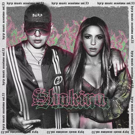
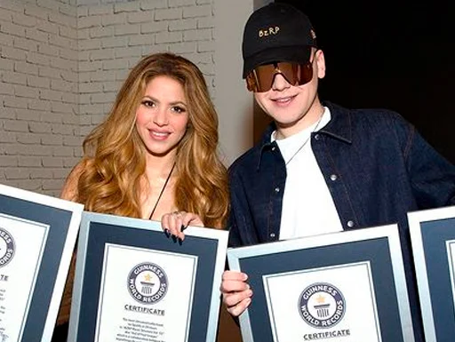

Depois da nóticia e rebercussão da sua traição, Shakira lança música "BZRP Music Sessions #53" com Dj Bizarrap e quebra 14 recordes.
Após ser divulgada a separação entre Shakira e Piqué e o motivo ter sido traição por parte do jogador, a cantora lança nova música "BZRP Music Sessions #53" no inicio desse ano e letra revela alfinetada para o ex-marido. Em vários trechos da canção pode se observar indiretas, mas em um específico ficou bem claro para todos os fãs, no trecho "Yo solo hago música, perdón que te salpique" Shakira faz pausa na pronuncia de algumas palavras que podem ser conectadas ao nome do jogador.
Dois meses depois do lançamento, nessa ultima sexta-feira(10) a faixa voltada a Gerárd Piquet quebrou quatro records no guinness book, sendo eles:
.Faixa latina mais vista no YouTube em 24 horas (63 milhões);
.Faixa latina mais rápida a atingir 100 milhões de visualizações no YouTube;
.Faixa latina com mais streams no Spotify em 24 horas (14,93 milhões de streams);
.Faixa latina mais transmitida no Spotify em uma semana (80,6 milhões de transmissões).
